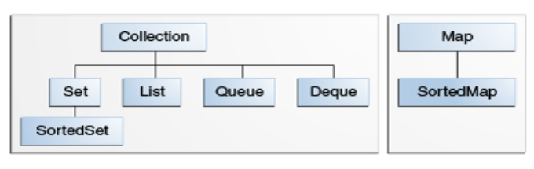
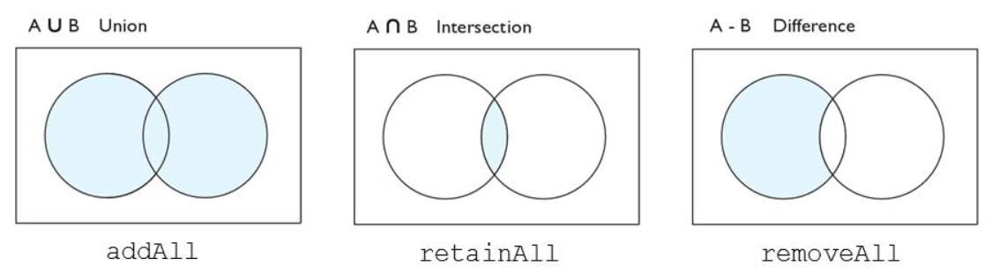

Set (Conjunto)¶
La interfaz Set está contenida en el paquete java.util y extiende de la interfaz Collection, es una colección desordenada de objetos en los que no se pueden almacenar valores duplicados. Esta interfaz contiene los métodos heredados de la interfaz Collection y agrega una función que restringe la inserción de elementos duplicados.

La interfaz Set define los métodos básicos de añadir, eliminar, comprobar tamaño, si está vacío, también podemos verificar si un elemento existe en el conjunto (Set). Pero no hay forma de obtener un elemento del conjunto. Es decir, podemos comprobar que algo existe y podemos iterar sobre los elementos del conjunto, pero no es posible obtener, por ejemplo, el elemento 3 del conjunto.
Dado que Set es una interfaz, debe instanciar una implementación concreta de la interfaz para poder usarla. Puede elegir entre las siguientes implementaciones de Set en la API de colecciones de Java:
- java.util.EnumSet
- java.util.HashSet
- java.util.LinkedHashSet
- java.util.TreeSet
Una de las mejores implementaciones (con mejor rendimiento) de la interfaz Set es la clase HashSet, que utiliza tablas hashes para almacenar los elementos.
Es muy parecido a la clase HashMap que hemos utilizado anteriormente.
Crear un Set¶
Puedo crearme Set genérico sin especificar el tipo:
Set setA = new HashSet();
Set setB = new LinkedHashSet();
Set setC = new TreeSet();
Set<Integer> set = new HashSet<Integer>();
Añadir elementos en un Set¶
Set<String> setA = new HashSet<>();
setA.add("element 1");
setA.add("element 2");
setA.add("element 3");
Recorrer los elementos de un Set¶
Hay dos formas de iterar los elementos de un Java Set:
- Utilizando un
Iteratorobtenido de la interfazSet. - Usando un bucle for-each.
Al iterar los elementos en el Set, el orden de los elementos depende de la implementación que utilicemos para crear el Set.
Con Iterator¶
Set<String> setA = new HashSet<>();
setA.add("element 1");
setA.add("element 2");
setA.add("element 3");
Iterator<String> iterator = set.iterator();
while(iterator.hasNext(){
String element = iterator.next();
}
Con bucle for-each¶
Set<Integer> set = new HashSet();
for(Integer num: set) {
System.out.println(num);
}
Si me he creado un set genérico, tengo que hacer un cast del objeto:
Set set = new HashSet();
for(Object object : set) {
String element = (String) object;
}
Eliminar elemento de un Set¶
set.remove("object-to-remove");
No hay forma de eliminar un objeto basado en el índice en un Set, ya que el orden de los elementos depende de la implementación.
Eliminar todos los elementos de un Set¶
Para eliminar todos los elementos usamos el método clear():
set.clear();
Tamaño de un Set¶
Para verificar el tamaño de un Set en Java se usa el método size(). El tamaño de un Conjunto es el número de elementos contenidos en el Conjunto.
Set<String> set = new HashSet<>();
set.add("123");
set.add("456");
set.add("789");
int size = set.size();//el tamaño será 3
Comprobar si está vacío¶
Set<String> set = new HashSet<>();
boolean isEmpty = set.isEmpty();
Verificar si contiene un elemento¶
Para determinar si un conjunto contiene el elemento, se llama al método contains, que internamente iterará sobre todos sus elementos y comparará cada elemento con el objeto pasado como parámetro. La comparación utiliza el método de equals de Java del elemento para verificar si el elemento es igual al parámetro.
Set<String> set = new HashSet<>();
set.add("123");
set.add("456");
boolean contains123 = set.contains("123");//devuelve true
Dado que es posible agregar valores nulos a un conjunto, también es posible verificar si el conjunto contiene un valor nulo. Así es como verifica si un conjunto contiene un valor nulo:
Set<String> set = new HashSet<>();
set.add(null);
boolean containsElement = set.contains(null);
Convertir Set en List¶
Puede convertir los elementos de un Set en una List llamamos al método addAll(), pasando el conjunto como parámetro.
Set<String> set = new HashSet<>();
set.add("123");
set.add("456");
List<String> list = new ArrayList<>();
list.addAll(set);
Necesidad de sobreescribir o anular método equals() y hashCode()¶
HashMap y HashSet usan el valor del código hash de un objeto para averiguar cómo se almacenaría el objeto en la colección y, posteriormente, el código hash se usa para ayudar a localizar el objeto en la colección. La recuperación de hash implica:
- Primero, encontrar el correcto lugar donde está almacenado usando hashCode().
- Segundo, buscar el elemento correcto usando equals().
Ejemplo¶
Cuando llamamos map.put(g1, “MARKETING”); generará un hash en alguna ubicación y cuando llamemos a map.put(g2, "IT"); generará el mismo valor hash (igual que g1) y reemplazará el primer valor por el segundo valor porque al iterar sobre la estructura encuentra que k.equals(g2) es verdadero, significa que la clave de búsqueda ya existe. Entonces, reemplaza el valor anterior de esa clave por un valor nuevo.
Cuando Java compara dos objetos en estructuras de tipo hash (HashMap, HashSet etc) primero invoca al método hashcode y luego el equals. Si los métodos hashcode de cada objeto devuelven diferente hash no seguirá comparando y considerará a los objetos distintos. En el caso en el que ambos objetos compartan el mismo hashcode Java invocará al método equals() y revisará a detalle si se cumple la igualdad. De esta forma las búsquedas quedan simplificadas en estructuras hash.
class Persona {
private String name;
private int id;
Persona(String name, int id) {
this.name = name;
this.id = id;
}
@Override
public boolean equals(Object o) {
if (this == o) return true;
if (o == null || getClass() != o.getClass()) return false;
Persona persona = (Persona) o;
return id == persona.id && Objects.equals(nombre, persona.nombre);
}
@Override
public int hashCode() {
return Objects.hash(nombre, id);
}
}
public static void main(String[] args) {
Persona p1 = new Persona("Patricia", 1);
Persona p2 = new Persona("Patricia", 1);
Set<Persona> conjunto = new HashSet<Persona>();
conjunto.add(p1);
conjunto.add(p2);
System.out.println(conjunto.contains(p1));
}
Operaciones con Set¶
Dado que Set representa un conjunto, podemos realizar todas las operaciones matemáticas básicas como intersección, unión y diferencia.
Supongamos que tenemos dos conjuntos, es decir, conjunto1 = [22, 45, 33, 66, 55, 34, 77] y conjunto2 = [33, 2, 83, 45, 3, 12, 55]. Podemos realizar la siguiente operación en el Set:

- Intersección: La operación de intersección devuelve todos aquellos elementos que están presentes en ambos conjuntos. La intersección de set1 y set2 será [33, 45, 55].
- Unión: la operación de unión devuelve todos los elementos de set1 y set2 en un solo conjunto, y ese conjunto puede ser set1 o set2. La unión de set1 y set2 será [2, 3, 12, 22, 33, 34, 45, 55, 66, 77, 83].
- Diferencia: La operación de diferencia elimina los valores del conjunto que están presentes en otro conjunto. La diferencia de set1 y set2 será [66, 34, 22, 77].
En Set, el método addAll() se usa para realizar la unión, el método de retainAll() se usa para realizar la intersección y el método removeAll() se usa para realizar la diferencia.